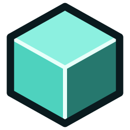

Polyhedron Studio
Polyhedron Studio est l'évolution créative nouvelle génération de l'univers *Polyhedron*, développée en synergie avec l'intelligence artificielle.
Véritable environnement bac à sable procédural en temps réel, il vous permet de bâtir des structures géométriques complexes, de concevoir des machines automatisées grâce à un système complet de câblage logique (Wires) et d'expérimenter sans limites.
Le projet est entièrement Open Source : explorez les entrailles du code source, téléchargez les dernières versions ou contribuez directement au développement sur GitHub !
*Si vous trouvez un ou plusieurs bugs, n'hésitez pas à me les faire remonter sur mon Discord ou via les Issues GitHub.
Aperçu & Démonstration :
Fonctionnalités du Studio
Créez et sculptez des environnements géométriques infinis avec une liberté totale de placement et d'édition.
Interconnectez émetteurs, capteurs, moteurs et portes logiques pour fabriquer des mécanismes et des robots autonomes.
Dépôt public sur GitHub : auditez le code, proposez des améliorations et créez vos propres modules personnalisés.
Moteur taillé pour gérer d'immenses structures polyédriques et des milliers d'entités actives en temps réel.
Architecture architecturée et enrichie via des flux d'ingénierie assistés par modèles d'intelligence artificielle.
Console étendue, commandes système en temps réel et outils d'inspection interne pour les créateurs exigeants.
Changelog :
Version 1.0.0 [Open Source Release]
Lancement Officiel
- Ouverture publique du dépôt GitHub polyhedron-studio.
- Refonte complète du système d'édition et de manipulation de blocs.
- Intégration du système de câblage logique et d'automatisation.
- Optimisation du moteur de rendu géométrique pour Windows.